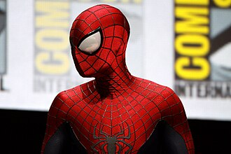
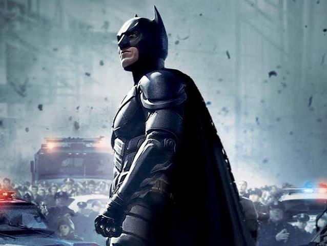
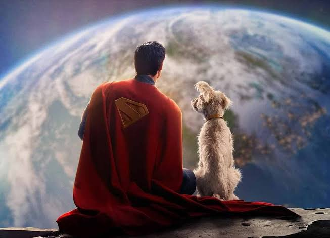
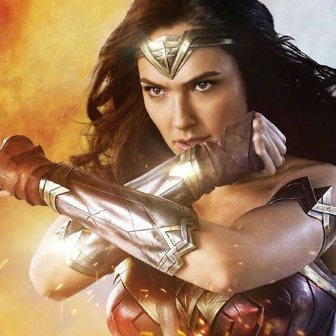

Spider-Man, conocido en español como el Hombre Araña, es un superhéroe de cómic estadounidense publicado por Marvel Comics. Fue creado por el escritor Stan Lee y el ilustrador Steve Ditko. Su primera aparición se produjo en el n.º 15 de la antología Amazing Fantasy (1962) durante la edad de plata de las historietas. Considerado uno de los superhéroes más populares y de mayor éxito comercial, ha aparecido en cómics, series de televisión, películas, videojuegos, novelas y obras de teatro.

Batman es un superhéroe ficticio de cómic creado por los estadounidenses Bob Kane y Bill Finger y propiedad de DC Comics. Apareció por primera vez en la historia titulada «El caso del sindicato químico» de la revista Detective Comics N.º 27, lanzada por la editorial National Publications el 30 de marzo de 1939. La identidad secreta de Batman es Bruce Wayne en algunos países de habla hispana un rico playboy, filántropo e industrial estadounidense que reside en la ficticia Gotham City.

superman es un superhéroe perteneciente al grupo de cómics estadounidenses publicados por DC Comics. El personaje fue creado por el escritor estadounidense Jerry Siegel y el artista canadiense Joe Shuster, y debutó en el cómic Action Comics #1 el 18 de abril de 1938 (aunque la portada lo data de junio de 1938),[5] cuando ambos se encontraban viviendo en Cleveland, Ohio. Superman ha sido adaptado a varios otros medios, que incluyen seriales de radio, novelas, películas, programas de televisión, teatro y videojuegos. Las traducciones tempranas de Superman en el ámbito hispanohablante tradujeron el personaje como Superhombre o Ciclón.

La Mujer Maravilla[5] o Wonder Woman es una superheroína ficticia creada por William Moulton Marston y H. G. Peter para la editorial DC Comics. La hija Hipólita, también Amazona y Olímpica. Es una princesa guerrera de las Amazonas, pueblo ficticio basado en el de las amazonas de la mitología griega. En su tierra natal es conocida como la princesa Diana de Temiscira pero fuera de esta utiliza la identidad secreta de Diana Prince. Está dotada de una amplia gama de poderes superhumanos y habilidades de combate superiores, gracias a los dones otorgados por los dioses y su amplio entrenamiento. Posee un gran arsenal de armas, incluyéndose entre las principales el Lazo de la Verdad, un par de brazaletes mágicos indestructibles, su tiara, que sirve como arma, y en algunos relatos, en la edad de oro, tuvo un avión invisible.
